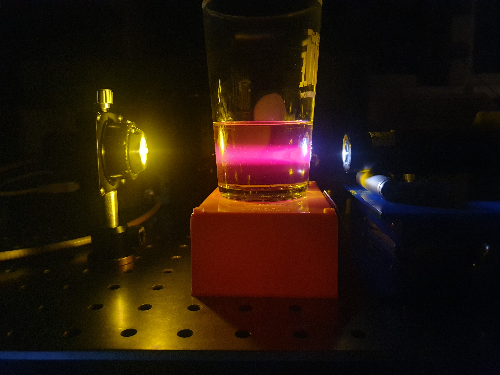

Education
(2023-present) Ph.D. Physics , Laboratory OPTIMAG, University of Brest, France
Supervisor: Pr. Sylvain Rivet.(2021-2023) M.S. Optics and Photonics , University of Brest, France
(2018-2020) B.S. Physics , University of Brest, France
Research experience
Ph.D. Thesis at the University of Brest: Development of label-free multimodal optical imaging techniques using polarization and phase microscopy for bioimaging.
Master's Thesis at the University of Brest: Sensitive polarized light microscopy
Publications and patents
H. Laviec, S. Rivet, M. Dubreuil, G. Gilbert and Y. Le Grand, "Multimodal video-rate widefield polarization and phase microscopy by spectrally structured asymmetric illumination", to be submitted, Biomedical Optics Express, 2026
H. Laviec, S. Rivet, M. Dubreuil and al., "Video rate widefield sensitive polarized light microscopy by spectrally structured illumination", Optics Letters, 2025
H. Laviec, S. Rivet, M. Dubreuil and al., "Widefield quantitative polarized light microscopy using spectrally encoded null polarimetry", Optics Letters, 2024
S. Rivet, M. Dubreuil, Y. Le Grand, B. Boulbry and H. Laviec, S. Rivet, M. Dubreuil and al., "Dispositif de démodulation par éclairement spectralement structuré pour la microscopie plein champ de la biréfringence par codage spectral", patent FR2406902, 2024
Conference presentations
- (submitted) French congress of Optics, Dijon, July 2026
- (accepted) SPIE Europe 2026, oral presentation, Strasbourg, April 2026
- Doctoral School congress, oral presentation, Rennes, May 2025
- IBSAM (Institut Brestois Santé Agro Matière) conference, poster, Brest, May 2025
- French congress of Optics, oral presentation, Rouen, July 2024
Teaching and public outreach
- Lab work on microscopy and spectrophotometry for biology, geology and physics first year students
- Master's student supervision on double-interferometer Optical Coherence Tomography and investigation of phase-contrast microscopy
- Science festival in Brest "Fête de la Science": demonstrations of simple physics experiments of everyday-life phenomena
- Supervision of high school students on a project about fluorescence and its application to microscopy

olive oil illuminated by a white LED.